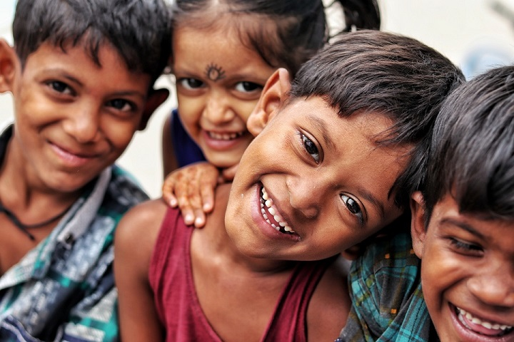

India is one of the world’s largest producers of milk & pulses and ranks as the second-largest producer of rice, wheat, sugarcane, groundnut, vegetables, fruits, and cotton, as per the Food and Agriculture Organization of the United Nations (FAO). Despite the status, 14 percent of India’s population is undernourished, according to ‘The State of Food Security and Nutrition in the World, 2020.
The report states 189.2 million people are undernourished in India 34.7 percent of the children aged under five in India are stunted. 20 percent of India’s children under the age of 5 suffer from wasting, meaning their weight is too low for their height.
‘‘It is unacceptable that hunger is on the rise at a time when the world wastes more than 1 billion tonnes of food every year. It is time to change how we produce and consume, including to reduce greenhouse emissions. Transforming food systems is crucial for delivering all the Sustainable Development Goals. As a human family, a world free of hunger is our imperative.’’- Secretary-General António Guterres.
Despite adequate food production, the UN Food and Agriculture Organisation has reported that about 190 million Indians remain undernourished. Moreover, it states that every third malnourished child is Indian.
Ironically, the same report highlights that around 40% of the food produced in India is either lost or wasted. It is further estimated that the value of food wastage in India is around ₹92,000 crores per annum.
This food wastage, however, isn’t limited to one level alone but perforates through every stage; from harvesting, processing, packaging, and transporting to the end stage of consumption.
Though food wastage is a global problem, India stands a chance to convert this into an opportunity, if it can address it properly.



Connect with us